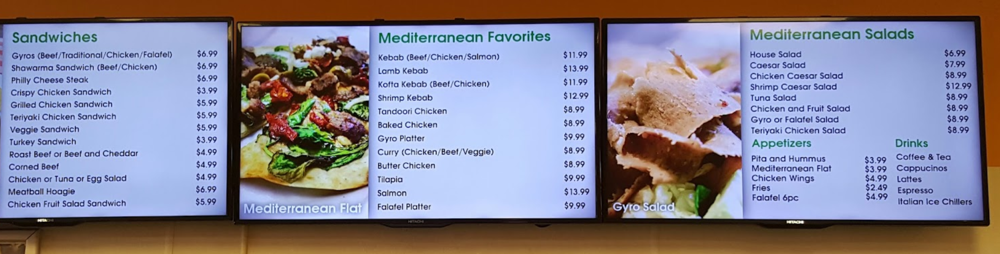

This is a collection of technology solutions I've implemented in personal and family business projects.
For the menuboard at my family's restaurant, we needed a solution that was easy to update, cost effective, and looked good. Normally, digital signage solutions are extremely expensive, and result in vendor lock-in where it is hard to transition to different vendors if performance or features is not up to par. However, the Raspberry Pi single board computer retails at only $35, or $50 for a kit including the SD card used as storage and a power adapter. It runs Linux, which is a free and open-source operating system, and can be configured to do almost anything that doesn't involve large amounts of computing power. We used three large TVs as the displays, and since each Raspberry Pi has one display output, used one Pi each. Initially, I set them up manually though Bash scripting and cron jobs to load up an image viewer and display our menu automatically at startup. Doing this setup and having to run them headlessly (as in without display output) outside of displaying the menu taught me a lot about Linux terminal use, system administration, and how the system works on a low level, and how all of that can be used to tackle a real world problem. It also taught me the importance of backups. This past year, two of the Pis suffered SD card failures, and the configurations were not properly backed up. They are now instead running Screenly Open Source Edition, a digital signage software solution that simplifies setup, but comes with a host of other issues such as being too heavy for the Pis to run smoothly. However, it provides a stopgap solution while I re-configure the system to a custom one that works better.
